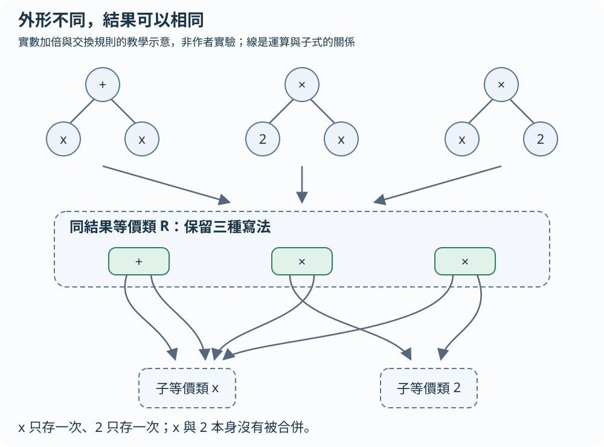
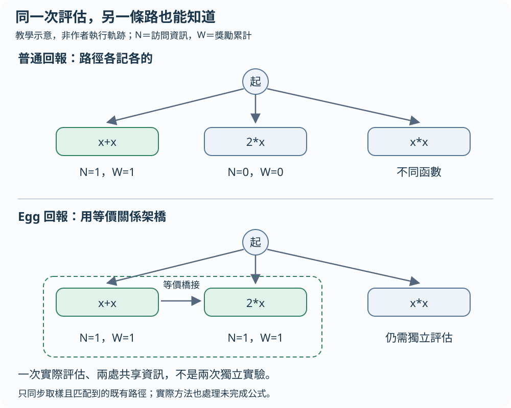
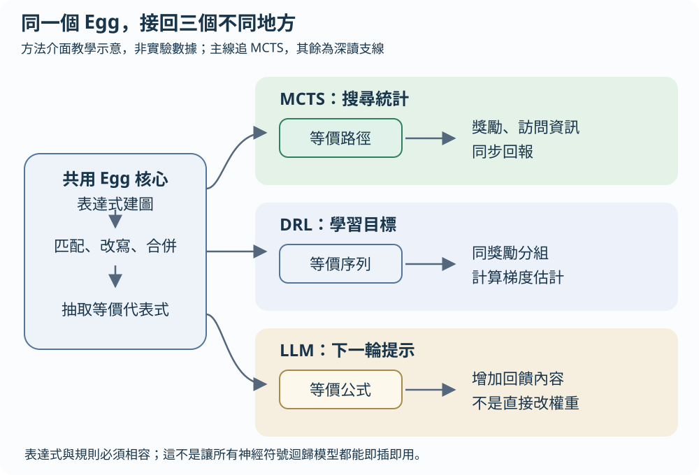

你有三張計算卡：「x 加 x」、「2 乘 x」、「x 乘 2」。在通常的實數算術下，三張卡都是把輸入加倍。如果找公式的系統把它們當成三個全新發現，就會花力氣重複試同一件事。EGG-SR 的主意是讓搜尋知道哪些寫法其實等價，並把已得到的資訊分享過去。這是生活比喻，不是作者實驗。
先讓四台機器算同一組數字
符號迴歸就是從資料找出可解釋它的公式，而非預先指定只能擬合直線或二次式。以下全是自編教學例，不是本文基準測試。任務定義對照原文 §2
前三個式子在所採用的實數語意下恆等，第四個則是平方。手算 x=3 時，加倍得到 6，平方得到 9。系統應保留探索平方這個不同想法的機會，但不必把三種加倍寫法都當成沒有歷史的新機器。
我們知道加倍式等價，是因為有代數規則，不是因為這三筆資料剛好一樣。例如只測 x=0 與 x=2，x+x 和 x*x 都得到相同結果；改測 x=3 就不同。有限取樣上的相同輸出，不能當成符號等價證明。
輸入 x： 1 2 3
目標 y： 2 4 6
x+x： 2 4 6
2*x： 2 4 6
x*2： 2 4 6
x*x： 1 4 9等式圖：把「同一功能」與「同一子式」分清楚
e-class 是等價類，像一個收納同功能寫法的資料夾；e-graph 是連接這些資料夾的等式圖。資料夾裡的 e-node 記錄某個運算，邊則指向它所用的子資料夾。這讓系統不用為每一種寫法各複製一整棵公式樹。原文 §3.1、Fig. 1
我們的示意把 x+x、2*x、x*2 放進同一個結果等價類，但裡面仍有加法與兩種乘法結構。它們的子式 x 都連到同一個 x 等價類，常數 2 也只需存一次。「結果等價」與「底下共享子式」是兩層不同的共享。
Egg 模組先把式子建成圖，依規則匹配、加入等價寫法並合併等價類。反覆改寫與合併的過程叫等式飽和；若沒有新結果才是達到飽和，實作也可能因迭代上限提前停止。之後抽取一批代表式，回傳給搜尋器；不必也通常無法列出所有變體。v2 同時說明成本式抽取與隨機遊走取樣。原文 §3.1、附錄 A.3.2
這裡沒有只要求「把公式化到最簡」。重點是找出搜尋途中已存在的等價寫法，讓演算法利用它們的關係。
三棵寫法樹，連進同一個結果等價類

放大閱讀圖解 ↗ · 窄螢幕可在圖內左右滑動。

圖解文字說明
- 三種寫法
x+x、2*x、x*2 的語法樹不同，在所用實數算術規則下表示同一函數。
- 結果等價類
同一結果資料夾保留加法與兩種乘法節點；不是刪到只剩一個最短字串。
- 共享子式
多條運算邊指向同一個 x 子等價類與常數 2 子等價類；x 與 2 並沒有被合併。
主線只追一件事：搜尋統計怎麼分享？
MCTS 是蒙地卡羅樹搜尋。它先沿著某條規則路徑走，擴展候選，再試著完成公式、擬合係數並算分，最後把結果往上回報。它同時考慮「以前分數不錯」和「還沒試夠」的分支，避免只顧眼前最好答案。原文 §3.2、Fig. 2
用我們的完成公式示意：假設樹中已經有通往 x+x 與 2*x 的兩條路。普通搜尋可能各記各的訪問次數與獎勵；第一條剛試過，第二條卻仍看起來完全沒試過。
Egg-MCTS 在回報時，建立並展開等式圖，取樣等價的規則序列，檢查樹中是否已存在相應路徑；對找到的等價路徑同步回報獎勵與訪問資訊。並非每次都列完所有等價式，也不是憑空替所有寫法建立新路徑。實際論文的 Fig. 2 還處理未完成式子的路徑；我們用完成式，只是為了先看清共享統計。原文 §3.2 Egg-based Backpropagation
假設只有一次實際評估，獎勵為 1；示意中兩個原本未訪問的等價位置都可收到「有一份獎勵 1 的經驗」。這不是做了兩次獨立實驗。x*x 的統計不能因為長得像就一起更新，仍須靠自己的評估。共享資訊讓等價路線不再彼此失憶，省出的注意力才有機會轉向真正不同的候選。
同一次評估，讓等價路徑一起知道

放大閱讀圖解 ↗ · 窄螢幕可在圖內左右滑動。

圖解文字說明
- 普通回報
x+x 得到獎勵 1，自己的統計更新；另一條 2*x 路徑還看起來沒試過。
- Egg 橋接
先按可靠規則辨認等價，再把同一次評估的獎勵與訪問資訊同步到樹中找到的等價路徑。
- 保留不同想法
x*x 不是同一函數，不能接收加倍式的獎勵；它仍需獨立評估。
相同資訊的分數，也要說清楚怎麼算
延續自編資料，若使用原文常用的獎勵 1/(1+NMSE)，NMSE 是「平均平方誤差除以目標值變異數」。加倍式誤差為零，獎勵為 1。平方的平方誤差合計為 (1−2)²+(4−4)²+(9−6)²=10；目標相對平均值 4 的平方差合計為 8，所以 NMSE 為 10/8=1.25，獎勵為 1/2.25=4/9。這些是教學手算，不是論文結果。獎勵定義見原文 §3.2；NMSE 見附錄 C
能分享相同分數的前提，是採用相同資料、目標與評估語意。如果分數另含語法長度或執行成本，同函數的不同寫法未必同分，就不能直接照搬「等價式同獎勵」的假設。
30秒自測（自編教學例）
只實際評估一次 x+x，兩條已辨認為等價的現有路徑都變成 N=1。這代表做了兩次獨立評估嗎？
x*x 能因此直接取得 x+x 的同一份獎勵嗎？沿用實數加倍與平方的小例，這是自編教學檢查，不是論文實驗。
看答案與理由
不是。只有一份實際經驗被分享給兩條等價路徑，N=1 是共享後的訪問資訊，不是多出一筆獨立觀測。
不能因為這次共享就把加倍式的獎勵送給平方。x*x 與 x+x 並不等價，仍須自己評估；偶然同分也不是等價證明。等價式同獎勵還限於相同資料、目標與評估語意；若另含語法成本，不同寫法未必同分。
先保留這些限制
等價性依賴語意、定義域與改寫規則。以實數對數為例，log(2*x)=log(2)+log(x) 要在 x>0 的範圍使用；a/a=1 也要排除 a=0。浮點運算、溢位與受保護運算子，可能讓熟悉的實數恆等式不再直接適用。規則必須在目標設定下可靠，不能讓錯誤合併把不同函數混在一起。原文 §2 的規則式等價定義
作者在附錄也明說，系統化編碼並強制所有改寫規則的定義域，仍留作未來工作；目前某些越域候選會因評估時的數值錯誤或 NaN 被排除。因此上面的域條件是理解方法所需的前提，不代表現有實作已完整保證所有改寫都適用。數值錯誤檢查也不是全域等價證明。原文附錄 A.2 末段
建立圖、匹配規則、飽和與抽取都需要時間和記憶體。規則越多，圖也可能變大；有限迭代和取樣還可能漏掉等價關係。這是一種有成本的資訊共享，沒有保證每個任務、每個時限都更快，也不保證找到資料背後唯一真公式。原文 §3.1、§5.2
同一個 Egg，接上 DRL 與 LLM 時改的是哪裡？
DRL 是深度強化學習。模型逐步生成公式，依獎勵更新神經網路。Egg-DRL 在學習目標中聚合同獎勵的等價生成序列，改善梯度估計；這不是 MCTS 的訪問次數共享。LLM 是大型語言模型；Egg-LLM 先解析模型生成的 Python 函式，再把抽出的等價式放進下一輪回饋提示。這也不是直接改 LLM 的權重。原文 §3.2、附錄 Fig. 8–9
三條介面共用「表達式進 Egg、等價代表式出來」，但接回的位置不同。本文也明說，逐層符號網路 SymNet 不直接符合其文法式表示；部分 DRL 擴充與 Transformer 推論階段如何整合仍是開放問題，不能說所有神經符號迴歸都即插即用。原文 §3.3
同一核心，三種不同的接回位置

放大閱讀圖解 ↗ · 窄螢幕可在圖內左右滑動。

圖解文字說明
- 共用 Egg 核心
把表達式建圖、匹配規則、合併、抽取等價代表式。
- MCTS：回報搜尋統計
在現有搜尋樹的等價路徑間分享獎勵與訪問資訊。
- DRL：改學習目標
聚合同獎勵的等價生成序列，用來計算策略梯度估計。
- LLM：加回饋提示
解析生成函式，將抽出的等價式加入下一輪提示；不是直接更新模型權重。
理論保證：regret 比較不是任意時限的速度承諾
regret 在這裡量的是推薦動作與最佳動作的價值差，不是公式字數或執行秒數。Theorem 3.1 用等價共享降低有效分支因子，得到較緊或不差的漸近界。附錄採用確定性、有限規劃範圍、獎勵有界且折扣因子在 0 與 1 之間的設定；尤其分析採 OPD 的樂觀規劃框架，而不是直接為任意 UCT 實作提供同一保證。原文 §3.4、附錄 B.1–B.2
Theorem 3.2 的等價分組估計器，在相同獎勵及所述機率分組條件下保持無偏，變異數不增。定理寫的是小於或等於，不能讀成任何情況都嚴格下降；實際只抽樣有限變體時，不能自動承接完整等價類機率加總的無偏與變異數保證。原文 Theorem 3.2、附錄 B.3
實驗數字、反例與原文閱讀路線
Table 1 的三角函數資料上，無雜訊 (3,2,2) 設定的 Egg-MCTS 中位 NMSE 小於 10⁻⁶，MCTS 為 0.033；但有雜訊的同一設定是 0.012 對 0.007，反而是基線較低。Egg-DRL 在有雜訊 (4,4,6) 設定也是 5.09 對 2.46，沒有每格都改善。三元組表示變數數、單項數與交叉項數，不能當成同一資料的三次結果。這些數字是指定基準的誤差，不是發現真定律的機率。原文 §5.1、Table 1
先看 Fig. 1，分辨 e-class、e-node 與共享子式；再看 Fig. 2 與 §3.2 的回報流程，追一次等價路徑怎麼接到統計。接著看 Table 1 的逐格結果，而非只看摘要結論。想讀另一種介面，再看 Fig. 8 或 Fig. 9；想核保證，連同附錄 B 的假設讀。最後看 §5.2 的時間與記憶體分析，問清楚辨識等價本身花了多少成本。
原文與來源
此頁依下列固定快照編寫；教學例子與程式片段用來解釋方法，請回到原文確認研究設定與結果。